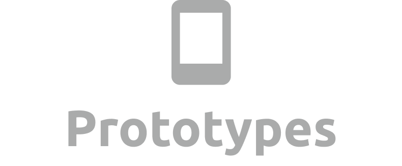
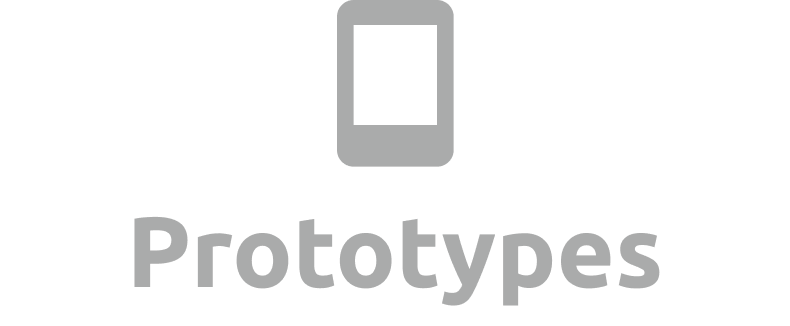
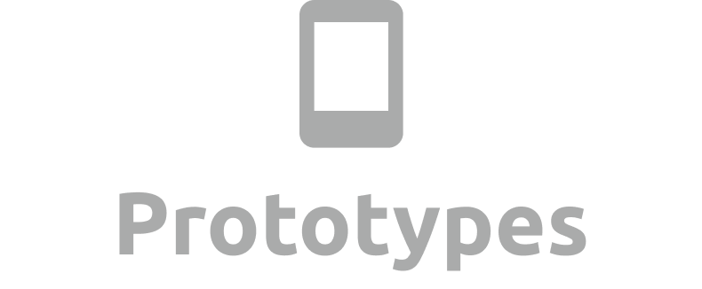
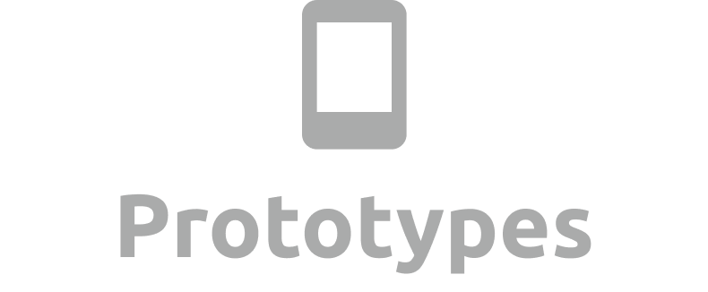

 

Now that we understand this context of limited monitor space, distracting chats, and the reactions feature for polling purposes, let’s look at possible solutions.

Our aims were to help teachers better engage with their classrooms by helping them reach the chat and polling features with the fewest amount of clicks and window applications.
More specifically, how can we help teachers easily filter the essential information like questions from general chat, and how can we maximize learnability for a familiar product to meet existing behaviors when it comes to using the Reactions feature as a polling tool?
We found that the best solution was simply to give the ownership of questions back to the students by introducing a message flagging system and adding a Q&A tab to the existing chat box.

Our usability testing also found that half of our users wanted to see some form of text preview, while the other half found it distracting because they would try to read what students are saying and lose their train of thought.
So we looked at finding the sweet spot between visibility and distraction.
This is how it would work...
Students can continue chatting as normal in the regular chat, but now they have the option to flag questions when they come up, and the questions will automatically be migrated over to the Q&A tab.
Teachers can just navigate to this tab to see the messages that have been flagged as questions without needing to scroll through and waste time.
They will also be notified like the image below with a discreet notification telling them that someone has flagged a question.

We proposed to put the chat icon in the toolbar for more efficient accessibility, but Zoom actually rolled out this update in the second week of our project.
Lastly, we introduced a feature called Quick Poll. It looks and feels exactly like the existing Reactions tool, but now teachers and presenters can access it directly from the toolbar, which wasn’t possible before.
We considered using different emojis or even generic shapes or colours for this polling feature, but our survey results showed that 78% of users actually felt that the current emoji selection was enough for their classroom needs.
That’s why our aim here was to make it easier for teachers and students to keep doing what they’re already doing with the Reactions tool, which is to quickly ask verbal questions and get fast responses.